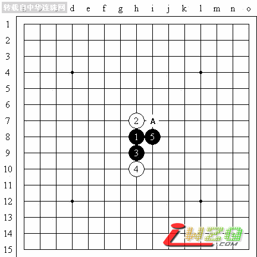

现场直播【京沪连珠擂台赛之胡瑜VS顾婉卿】
#1 现场直播【京沪连珠擂台赛之胡瑜VS顾婉卿】作者：有志青年 发表时间：2007-4-15 12:12:25
原文地址：http://www.shwzq.com/online/ShowArticle.asp?ArticleID=1242
各位棋友，早上好。
今天由我继续为大家直播京沪连珠五子棋擂台赛第二场。
今天，上海队先锋顾婉卿三段作为第一位擂主将迎战北京队次锋小将胡瑜四段的挑战。
“夜来风雨声，花落知多少”。经过小雨洗礼后的申城空气清新，道路两边随着清风微微摇摆的绿叶，让人见了心情感到格外轻松。相信两位选手也是这样，一定会为我们大家献上精彩的对局。
对局室内，一桌、一坪、一副木野狐，给人感觉庄重而肃穆。要是再能象古人一样，焚香抚琴，置身这种氛围之下，恐怕人人都会有种时空错位的感觉。
中国是文明古国，也是文化源远流长的国度。“琴棋书画”历代以来被奉为四雅，“棋”之所以位列第二，被历朝文人雅客嗜好，不仅因为从对局者本身可以体现出人的文化素养、陶冶人的情操，更因为从棋本身又衍射出深厚广博的文化，形成了中国文化的重要组成部分之一。
乘着裁判长在跟两位选手重申规则的时候，在这里，先向大家介绍一个小知识，就是为什么这个比赛叫“连珠五子棋”。究竟连珠和五子棋有没有不同。
五子棋呢，诞生在我国古代，通俗的说，原产地是我们中国。具体年限已经很难考证，如果有兴趣的朋友今后能在这方面考古取得成果，那相信一定是世界五子棋界的一个重大发现。
大约在唐代，五子棋辗转流传，先到高丽，也就是今天的朝鲜，后来又到了日本，并在那里得到发展。我们现在说的现代五子棋呀，专业五子棋呀，竞技五子棋呀，尽管名称不同，但采用的规则基本都是一致的，是国际通用的规则，而这个规则也主要是在日本五子棋规则的基础上形成的。
那么在日本，一开始五子棋被称为“五目”、“五格”，名字并不统一，大约在18世纪末，经过当时的日本五子棋界向全日本为五子棋公开征名活动，最后五子棋才被称为“连珠”，意寓“五星如连珠”。从这个角度我推测，可能当时流传到日本的时候，日本并不知道五子棋的确切称呼。后来，到了20世纪6、70年代，五子棋又流传到欧洲。1988年，国际连珠联盟在瑞典斯德哥尔摩成立，从此，“连珠”成为了国际上对现代专业竞技五子棋的一种标准称法。
现在的国际正式比赛中，RENJU指的就是专业五子棋的比赛，而GOMOKU指的是我们中国传统意义上的五子棋比赛，或者称为业余五子棋比赛，没有禁手，没有三手交换，也没有五手二打。
所以，从大范围来讲，连珠和五子棋究其本质是同一个棋种。从狭义上讲，或者说从学术的、专业的角度说，五子棋和连珠是不一样的，前者是业余性的，后者是专业性的。从名称上讲，连珠的称法已经通用于国际，但作为中国的发明，我们还是喜欢称为五子棋。而且，自从中国在世界五子棋界发挥着越来越重要的作用后，五子棋的称法也正在逐渐为各国棋手接受和喜爱。
哦。今天，上海五子棋界的元老，本次组委会上海方面三位代表之一的顾伟国五段也莅临赛场观摩比赛。现在裁判长已经把需要强调的都强调好了。两位选手也已经开始准备猜先了。
在这里再说个花絮。由于五子棋是我国近10多年才发展起来的一个新兴专业竞技棋种。前年，五子棋刚被国际体育总局批准立项，中国棋院也在去年成立了中国围棋协会五子棋分会。因此，五子棋在我国竞技棋种里属于一大龄新生，还有很多路要走，需要各方面的支持和帮助。目前，我国只有五子棋专业棋手，还没有五子棋职业棋手。任何一个比赛的举办，从组办方到参赛选手都很辛苦。北京队这次来上海参赛，其中作为小弟弟的胡瑜，是放了学立马奔火车站，颠簸了一夜到的上海。昨天下午的比赛，他参加完揭幕式就回宾馆做功课去了，直到晚饭时候才完成。原来小胡瑜全指望大姐姐姚金蕊能够获胜，这样他明天就能去逛上海了，因此，没少给姚金蕊助威打气。结果，谁曾想，人算不如天算，大姐姐不小心失手，今天他还得上阵。为此，昨天晚上的晚饭他都没吃多少，就回房拆棋准备去了。
这次擂台赛，考虑到五子棋布局规则的特殊性和擂台赛制度的特别性。擂主只需和棋就算守擂成功，而攻擂方要是一直被迫开局，那样太不利了。所以，在比赛规则中规定了这么一条，就是攻擂方有权选择是否布局。胡瑜经过考虑，选择又擂主顾婉卿开局。顾婉卿经过思考，布局松月，胡瑜经过考虑，提出交换。顾婉卿随即摆下白4最强防。胡瑜稍微思考后，摆下2打点。黑5是一打，A点是二打。顾婉卿正在思考选择哪个点。

趁选手思考的时候。再跟大家说个棋手的小秘密。别看胡瑜年纪小，棋龄可不小。北京的曹东六段总是尊敬的称他“胡哥”。就这样，“胡哥”成了胡瑜的第二名称。上回在浙江比赛期间，我就瞧见好多棋手，论年龄都是胡瑜的哥哥、姐姐，甚至叔叔、阿姨，结果个个亲热地叫他一声“胡哥”。 #2 Re:现场直播【京沪连珠擂台赛之胡瑜VS顾婉卿】作者：笑三笑 发表时间：2007-6-10 17:40:02 精彩
顾婉卿的黑5已经选择好了，是目前连珠界普遍认同最强，可以黑必胜的黑5一打点。这个黑5的必胜方法是由